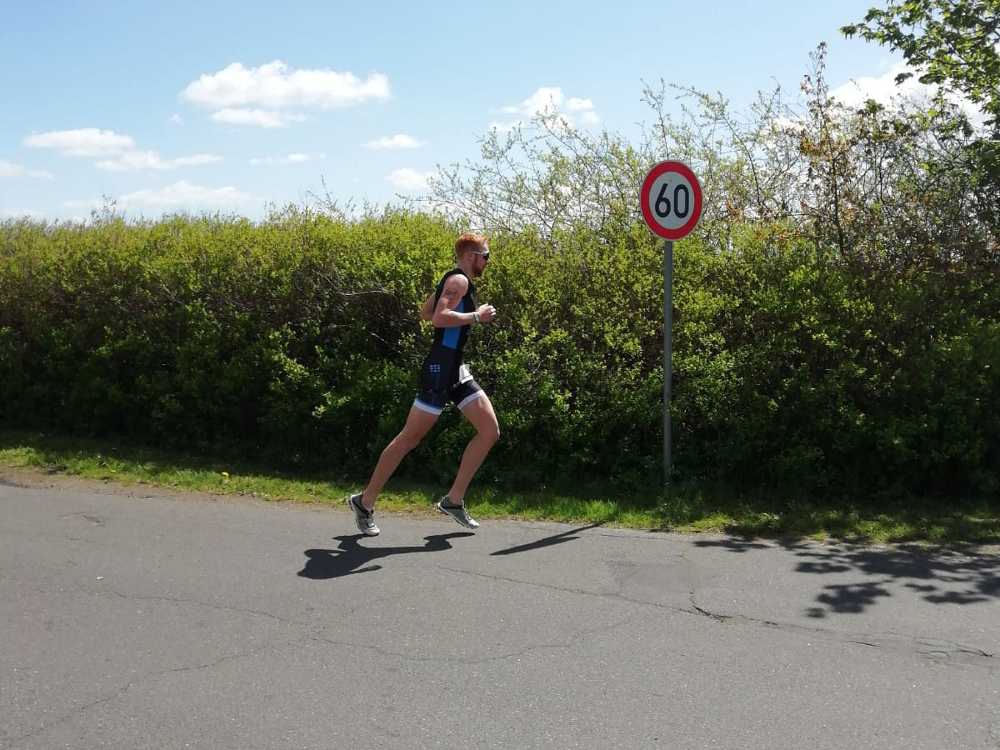
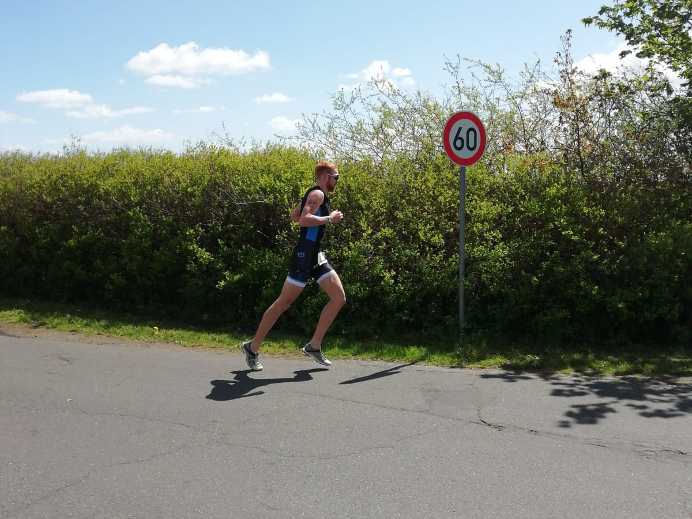

Ostseeman Triathlon
Glücksburg
Am Tag vor dem Wettkampf - beim Check-In sowie auf der Expo - bin ich einigen alten Bekannten begegnet - Menschen, die seit vielen Jahren Teil der Szene sind und die man nur hier trifft. Mit einigen dieser Typen verbrachte ich gemeinsam den Abend sowie die Nacht auf einem Wald-Parkplatz in unmittelbarer Nähe zum Wettkampfgeschehen. Es wurde über alte Zeiten gequatscht und nebenbei neue Menschen kennengelernt; darunter ein dänisches Paar, welches sein Zelt für die Übernachtung mitten im Unterholz des Waldes aufgeschlagen hat. Auch das ist Triathlon.
Das Spektakel ist lange nicht so überlaufen wie beispielsweise auf Malle oder in Hamburg. In Glücksburg ist alles familiärer und persönlicher. Es gibt viele Streckenabschnitte, auf denen die Sportler in sich gekehrt die Zeit mit sich allein verbringen und ihren Sport genießen dürfen. Die vielen Hotspots aus den frühen Jahren bestehen noch heute; sehr oft sind es dieselben Personen. Zum Beispiel die vier „Mädels“ am Strand kurz vor dem Campingplatz am Rande der Laufstrecke, die jeden vorbeilaufenden Athleten (inzwischen gemeinsam mit dem Nachwuchs und der Familie) anfeuern - von Musik begleitet, das Ganze über Stunden. Die vielen Anwohner, die sich mit Campingmobiliar am Streckenrand postiert haben und deinen Namen rufen, nachdem sie diesen anhand der Startnummer ermittelt haben. Gegenläufig auf der Laufstrecke umherziehende Angehörige oder Sportinteressierte. Einzelpersonen, die über Stunden auf Parkbänken verbringen, den Wettkampf verfolgen und dir zuklatschen. Die vielen Bekannten aus der Szene, die dir aufmunternde Worte zurufen. Die Moderations-Hotspots an verschiedenen Standorten; du fährst oder läufst vorbei und hörst wiederholt deinen Namen aus den Lautsprechern ertönen. Die Moderation im Zielbereich auf vielen Abschnitten der Laufstrecke wahrnehmbar. Zu guter Letzt: Der Vater des OSTSEEMAN, Reinhard Husen, lässt es sich nicht nehmen, viele Athleten im Tagesverlauf persönlich anzufeuern oder zu begrüßen.
Einer der besonders ergreifenden Momente des Tages: die letzten fünf Minuten vor dem Start. Emotionale Klänge durch die Lautsprecher, Herzschlag, Nationalhymnen für alle teilnehmenden Nationalitäten, gemeinsames Gedenken an einen kürzlich viel zu jung (bei einem Verkehrsunfall) verstorbenen Flensburger Triathleten. Gefühlt minutenlanges Geklatsche... sehr wertschätzend... Gänsehaut und Emotionen pur - und du kämpfst mit den Tränen. Alles in allem das aus meiner Sicht mit Abstand schönste mir bekannte Ausdauer-Sportveranstaltungsformat.
 
